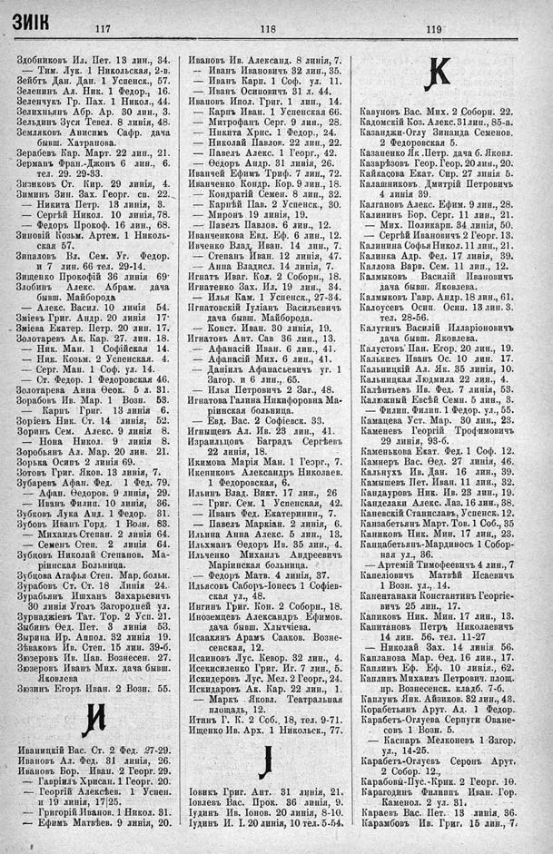

Лист источника 545
Скан

Распознанный текст
ЗИК 117
Здобниковъ Ил. Пет. 13 лин., 34.
— Тим. Лук. 1 Никольская, 2-в.
Зейбтъ Дан. Дан. 1 Успенск., 57.
Зеленинъ Ал. Ник. 1 Федор., 16.
Зеленчукъ Гр. Пах. 1 Никол., 44.
Зелихньянъ Абр. Ар. 30 лин., 3.
Зельдинъ Зуся Тевел. 8 линія, 48.
Земляковъ Анисимъ Сафр. дача
бывш. Хатранова.
Зерабевъ Кар. Март. 22 лин., 21.
Зерманъ Фран.-Джонъ 6 лин., 6.
тел. 29. 29-33.
Зизиковъ Ст. Кир. 29 линія, 4.
Зиминъ Зин. Зах. Георг. сп. 22.
— Никита Петр. 13 линія, 3.
— Сергѣй Никол. 10 линія, 78.
— Федоръ Прокоф. 16 лин., 68.
Зиновій Козьм. Артем. 1 Николь-
ская 57.
Зипаловъ Вл. Сем. Уг. Федор.
и 7 лин. 66 тел. 29-14.
Зищенко Прокофій 36 линія 69.
Злобинъ Алекс. Абрам. дача
бывш. Майборода.
— Алекс. Васил. 10 линія 54.
Зміевъ Григ. Андр. 20 линія 17.
Зміева Екатер. Петр. 20 лин. 17.
Золотаревъ Ак. Кар. 27. лин. 18.
— Ник. Ман. 1 Софійская 14.
— Ник. Козьм. 2 Успенская. 4.
— Серг. Ман. 1 Соф. ул. 14.
— Ст. Федор. 1 Федоровская 46.
Золотарева Анна Ѳеок. 5 л. 31.
Зорабовъ Ив. Мар. 1 Возн. 53.
— Карпъ Григ. 13 линія 6.
Зоріевъ Ник. Ст. 14 линія, 52.
Зоринъ Сем. Алекс. 9 линія 8.
— Нона Никол. 9 линія 8.
Зоробьянъ Ал. Мар. 20 лин. 21.
Зорька Осипъ 2 линія 69.
Зотовъ Григ. Яков. 13 линія, 7.
Зубаревъ Афан. Фед. 1 Фед. 79.
— Афан. Ѳедоров. 9 линія, 29.
— Иванъ Филип. 10 линія, 36.
Зубковъ Лука Анд. 1 Федор. 31.
Зубовъ Иванъ Горд. 1 Возн. 83.
— Михаилъ Степан. 2 линія 64.
— Семенъ Степ. 2 линія 64.
Зубцовъ Николай Степанов. Ма-
ріинская Больница.
Зубцова Агафья Степ. Мар. больн.
Зурабовъ Ст. Ст. 18 Линія 24.
Зурабьянъ Ишханъ Захарьевичъ
30 линія Уголъ Загородней ул.
Зурнаджіевъ Тат. Тор. 2 Усп. 21.
Зыбинъ Ѳед. Пет. 3 линія 53.
Зырина Ир. Аппол. 32 линія 19.
Зѣваковъ Ив. Степ. 15 лин. 39-б.
Зюзеровъ Ив. Пав. Вознесен. 27.
Зюзеровъ Иванъ Мих. дача бывш.
Яковлева
Зюзинъ Егоръ Иван. 2 Возн. 55.
И
Иваницкій Вас. Ст. 2 Фед. 27-29.
Ивановъ Ал. Фед. 31 линія, 26.
Ивановъ Бор. Иван. 2 Георг. 29.
— Гавріилъ Хрисан. 1 Георг. 20.
— Георгій Алексѣев. 1 Успен.
и 19 линія, 17/25.
— Григорій Иванов. 1 Никол. 31.
— Ефимъ Матвѣев. 9 линія, 20.
118
Ивановъ Ив. Александ. 8 линія, 7.
— Иванъ Ивановичъ 32 лин., 35.
— Иванъ Карп. 1 Соф. ул. 11.
— Иванъ Осиповичъ 31 л. 44.
Ивановъ Ипол. Григ. 1 лин., 14.
— Карпъ Иван. 1 Успенская 66.
— Митрофанъ Серг. 9 лин., 23.
— Никита Хрис. 1 Федор., 24.
— Ѳедоръ Андр. 31 линія, 26.
— Павелъ Алекс. 1 Георг., 42.
— Павелъ Павлов. 22 лин., 22.
Иванчей Ефимъ Триф. 7 лин., 72.
Иванченко Кондр. Кор. 9 лин., 18.
— Кондратій Семен. 8 лин., 32.
— Карпѣй Пав. 2 Успенск., 30.
— Миронъ 19 линія, 19.
— Павелъ Павлов. 6 лин., 12.
Иванченкова Евд. Еф. 6 лин., 12.
Ивченко Влад. Иван. 14 лин., 7.
— Степанъ Иван. 12 линія, 47.
— Анна Владисл. 14 линія, 7.
Игнатъ Иваг. Кол. 2 Соборн., 18.
Игнатенко Зах. Ил. 19 лин., 34.
— Илья Кам. 1 Успенск., 27-34.
Игнатовскій Іуліанъ Васильевичъ
дача бывш. Майборода.
— Конст. Иван. 30 линія, 19.
Игнатовъ Ант. Сав 36 лин., 13.
— Афанасій Иван. 6 лин., 41.
— Афанасій Мих. 6 лин., 41.
— Даніилъ Афанасьевичъ уг. 1
Загор. и 6 лин., 65.
— Илья Петровичъ 2 Заг., 48.
Игнатова Галина Никифоровна Ма-
ріинская больница.
— Евд. Вас. 2 Софіевск. 33.
Игныщевъ Ал. Ив. 23 лин., 41.
Израильцовъ Баградъ Сергѣевъ
22 линія, 18.
Икимова Марія Ман. 1 Георг., 7.
Икепиковъ Александръ Николаев.
1 Федоровская, 6.
Ильинъ Влад. Викт. 17 лин., 26
— Григ. Сем. 1 Успенская, 42.
— Иванъ Фед. Екатеринин., 7.
— Павелъ Маркіан. 2 линія, 6.
Ильина Анна Алекс. 5 лин., 13.
Ильхманъ Ѳедоръ Ив. 35 лин., 4.
Ильченко Михаилъ Андреевичъ
Маріинская больница.
— Федоръ Матв. 4 линія, 37.
Ильясовъ Саборъ-Іонесъ 1 Софіев-
ская ул., 48.
Ингинъ Григ. Кон. 2 Соборн., 18.
Иноземцевъ Александръ Ефимов.
дача бывш. Хлытчіева.
Исаакянъ Арамъ Сааков. Возне-
сенская, 12.
Исаиновъ Лус. Кевор. 32 лин., 4.
Исекисиленко Григ. Иг. 7 лин., 5.
Искидеровъ Лус. Мел. 2 Георг., 24.
Искидаровъ Ак. Кар. 22 лин., 1.
— Маркъ Яковл. Театральная
площадь, 12.
Итинъ Г. К. 2 Соб., 18, тел. 9-71.
Ищенко Ив. Арх. 1 Никольск., 77.
I
Іовикъ Григ. Ант. 31 линія, 21.
Іовлевъ Вас. Прок. 36 линія, 9.
Іудинъ Ив. Іонов. 20 линія, 8-10.
Іудинъ И. І. 20 линія, 10 тел. 5-54.
119
К
Кавуновъ Вас. Мих. 2 Соборн. 22.
Кадомскій Коз. Алекс. 31 лин., 85-а.
Казанджи-Оглу Зинаида Семенов.
2 Федоровская 5.
Казаненко Як .Петр. дача б. Яковл.
Казарѣзовъ Геор. Геор. 20 лин., 20.
Кайкасова Екат. Сир. 27 линія 5.
Калашниковъ Дмитрій Петровичъ
4 линія 39.
Калгановъ Алекс. Ефим. 9 лин., 28.
Калининъ Бор. Серг. 11 лин., 21.
— Мих. Поликарп. 34 линія, 50.
— Сергѣй Ивановичъ 2 Георг. 13.
Калинина Софья Никол. 11 лин., 21.
Калинка Адр. Фед. 17 линія, 39.
Каллова Варв. Сем. 11 лин., 12.
Калмыковъ Василій Ивановичъ
дача бывш. Яковлева.
Калмыковъ Гавр. Андр. 18 лин., 61.
Калоусевъ Осип. Осип. 13 лин. 3.
тел. 28-56.
Калугинъ Василій Илларіоновичъ
дача бывш. Яковлева.
Калустовъ Пан. Егор. 20 лин., 19.
Калькисъ Иванъ Ос. 10 лин. 17.
Кальницкій Ал. Як. 35 линія, 10.
Кальницкая Людмила 22 лин., 4.
Калѣнтьевъ Ив. Фед. 7 линія, 53.
Калюжный Евсѣй Семн. 5 лин., 3.
— Филип. Филип. 1 Федор. ул., 55.
Камацева Уст. Мар. 30 лин., 23.
Каменевъ Георгій Трофимовичъ
29 линія, 93-б.
Каменькова Екат. Фед. 1 Соф. 12.
Камнеръ Вас. Ѳед. 27 линія, 46.
Кальнухъ Ив. Дан. 16 лин., 39.
Камышевъ Пет. Иван. 11 лин., 32.
Кандауровъ Ник. Ив. 23 лин., 19.
Канделаки Алекс. Лаз. 16 лин., 38.
Каневскій Станиславъ, Успенск. 12.
Канзабетьянъ Март. Тов. 1 Соб., 35
Каниковъ Ник. Мин. 17 лин., 23.
Канцабетьянъ-Мардиносъ 1 Собор-
ная ул., 36.
— Артемій Тимофеевичъ 4 лин., 7
Капеліовичъ Матвѣй Исаевичъ
1 Возн. ул., 14.
Капентанаки Константинъ Георгіе-
вичъ 25 лин., 17.
Капиковъ Ник. Мин. 17 лин., 13.
Капитановъ Петръ Николаевичъ
14 лин. 56. тел. 11-27
— Николай Зах. 14 линія 56.
Капланова Мар. Ѳед. 16 лин., 17.
Каплинъ Еф. Еф. 10 линія, 62.
Каплинъ Михаилъ Петрович. площ.
пр. Вознесенск. кладб. 7-б.
Каплунъ Янк. Айзиков. 32 лин., 43.
Корабетьянъ Арут. Ад. 1 Федор..
Карабетъ-Оглуева Серпуги Оване-
совъ 1 Возн. 5.
— Каспаръ Мелконевъ 1 Загор.
ул., 14-25.
Карабетъ-Оглуевъ Серонъ Арут.
2 Собор. 12.,
Карабовъ-Пус.-Крик. 2 Георг. 10.
Карагодинъ Филиппъ Иван. Гор.
Каменол. 2 ул. 31.
Караевъ Вас. Пет. 13 линія, 36.
Карамбовъ Ив. Григ. 15 лин., 7.